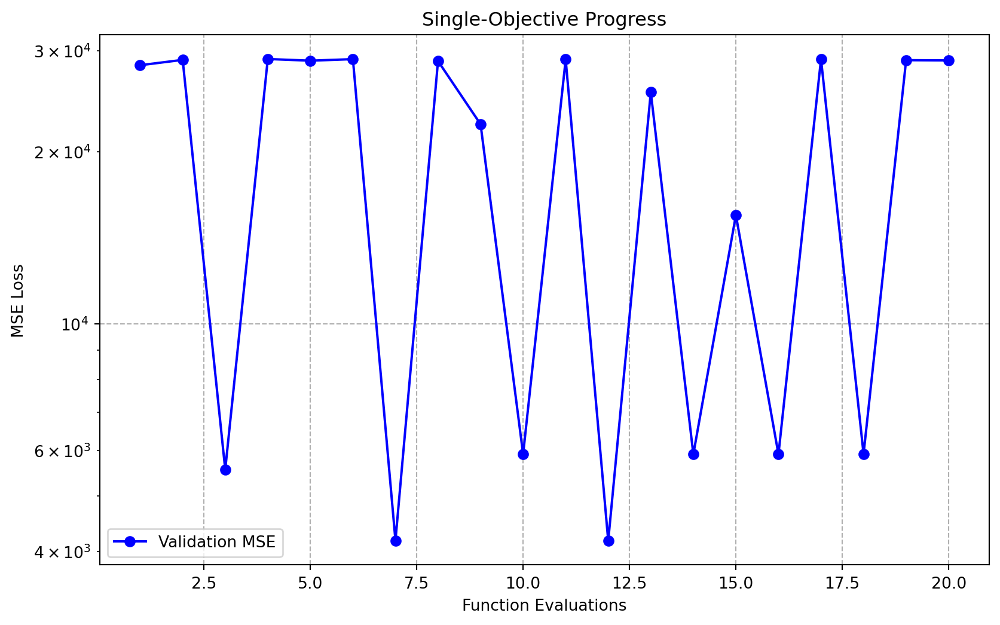
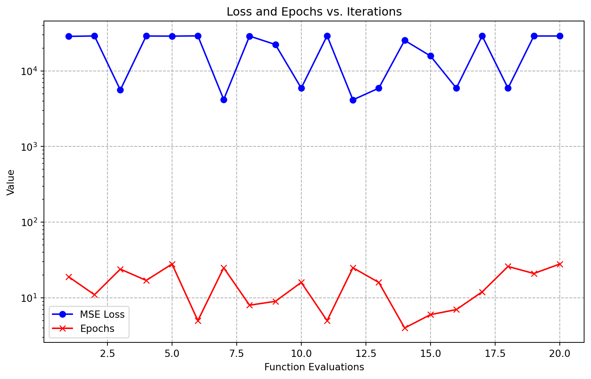

import warnings
import numpy as np
import matplotlib.pyplot as plt
from sklearn.datasets import load_diabetes
# New SpotOptim Interfaces
from spotoptim.core.data import SpotDataFromArray
from spotoptim.core.experiment import ExperimentControl
from spotoptim.hyperparameters.parameters import ParameterSet
from spotoptim.nn.linear_regressor import LinearRegressor
from spotoptim.function.torch_objective import TorchObjective
from spotoptim.SpotOptim import SpotOptim
warnings.filterwarnings("ignore")SpotOptim Hyperparameter Tuning (Multi-Objective)
Introduction
This tutorial demonstrates the new interface for hyperparameter tuning in spotoptim, covering both single-objective and weighted multi-objective optimization.
1. Data Loading
We use SpotDataFromArray to unify data handling.
# Load data
diabetes = load_diabetes()
X = diabetes.data.astype(np.float32)
y = diabetes.target.reshape(-1, 1).astype(np.float32)
# Create SpotDataSet
data = SpotDataFromArray(x_train=X, y_train=y)
print(f"Data shape: {X.shape} -> {y.shape}")Data shape: (442, 10) -> (442, 1)2. Define Hyperparameters
We define the search space, including epochs as a hyperparameter to demonstrate multi-objective trade-offs (loss vs. training cost).
params = ParameterSet() \
.add_float("lr", 1e-4, 1e-1, transform="log") \
.add_int("l1", 8, 64) \
.add_int("num_hidden_layers", 0, 2) \
.add_categorical("activation", ["ReLU", "Tanh", "Sigmoid"]) \
.add_categorical("optimizer", ["Adam", "SGD"]) \
.add_int("epochs", 3, 30) # Epochs as a parameter
print("Variables:", params.var_name)Variables: ['lr', 'l1', 'num_hidden_layers', 'activation', 'optimizer', 'epochs']3. Single-Objective Optimization
First, we optimize solely for Mean Squared Error (MSE).
Experiment Setup
# control object
exp = ExperimentControl(
dataset=data,
model_class=LinearRegressor,
hyperparameters=params,
batch_size=32,
metrics=["mse"] # Only optimizing (and returning) MSE
)
# Objective function
objective = TorchObjective(exp)Run Optimization
optimizer = SpotOptim(
fun=objective,
bounds=params.bounds,
var_type=params.var_type,
var_name=params.var_name,
max_iter=20,
n_initial=10,
seed=42
)
optimizer.optimize() message: Optimization terminated: maximum evaluations (20) reached
success: True
fun: 4174.101893833706
x: [0.0490865661254339 33.0 1.0 'ReLU' 'SGD' 25.0]
X: [[0.002358179074925926 39.0 ... 'SGD' 19.0]
[0.012476214377116374 54.0 ... 'Adam' 11.0]
...
[0.0896700435245171 31.0 ... 'Adam' 21.0]
[0.04096754240100647 63.0 ... 'Adam' 28.0]]
nit: 10
nfev: 20
y: [ 2.832e+04 2.893e+04 ... 2.890e+04 2.887e+04]Results
print(f"Best MSE: {optimizer.best_y_:.4f}")
optimizer.print_results()Best MSE: 4174.1019
| name | type | lower | upper | tuned | trans |
|-------------------|--------|---------|---------|--------------------|---------|
| lr | float | 0.0001 | 0.1 | 0.0490865661254339 | - |
| l1 | int | 8.0 | 64.0 | 33 | - |
| num_hidden_layers | int | 0.0 | 2.0 | 1 | - |
| activation | factor | ReLU | Sigmoid | ReLU | - |
| optimizer | factor | Adam | SGD | SGD | - |
| epochs | int | 3.0 | 30.0 | 25 | - |'| name | type | lower | upper | tuned | trans |\n|-------------------|--------|---------|---------|--------------------|---------|\n| lr | float | 0.0001 | 0.1 | 0.0490865661254339 | - |\n| l1 | int | 8.0 | 64.0 | 33 | - |\n| num_hidden_layers | int | 0.0 | 2.0 | 1 | - |\n| activation | factor | ReLU | Sigmoid | ReLU | - |\n| optimizer | factor | Adam | SGD | SGD | - |\n| epochs | int | 3.0 | 30.0 | 25 | - |'Visualization
loss = optimizer.y_
iterations = np.arange(1, len(loss) + 1)
plt.figure(figsize=(10, 6))
plt.plot(iterations, loss, label="Validation MSE", color="blue", marker="o")
plt.xlabel("Function Evaluations")
plt.ylabel("MSE Loss")
plt.title("Single-Objective Progress")
plt.yscale("log")
plt.grid(True, linestyle="--")
plt.legend()
plt.show()

4. Weighted Multi-Objective Optimization
Now we consider two objectives: MSE (to minimize error) and Epochs (to minimize computational cost). We will aggregate them using a weighted sum.
Update Experiment Configuration
We update the experiment to return both metrics.
# Update metrics to include epochs
exp.metrics = ["mse", "epochs"]
# Re-initialize objective to ensure changes pick up (though mostly reference based)
objective = TorchObjective(exp)Define Aggregation Function
We define a function to aggregate the multi-objective output y (shape (n, 2)) into a single scalar value for the optimizer. MSE is weighted by 2.0, Epochs by 0.1.
def aggregate(y):
# y is (n_samples, 2) -> [MSE, Epochs]
# We want to minimize both.
weights = np.array([2.0, 0.1])
return np.sum(y * weights, axis=1)Run Optimization
We pass fun_mo2so=aggregate to SpotOptim.
optimizer_mo = SpotOptim(
fun=objective, # Now returns (n, 2)
bounds=params.bounds,
var_type=params.var_type,
var_name=params.var_name,
max_iter=20,
n_initial=10,
seed=42,
fun_mo2so=aggregate # Use aggregation
)
optimizer_mo.optimize() message: Optimization terminated: maximum evaluations (20) reached
success: True
fun: 8291.100655691964
x: [0.04909963131736396 33.0 1.0 'ReLU' 'SGD' 25.0]
X: [[0.002358179074925926 39.0 ... 'SGD' 19.0]
[0.012476214377116374 54.0 ... 'Adam' 11.0]
...
[0.0896700435245171 31.0 ... 'Adam' 21.0]
[0.04096754240100647 63.0 ... 'Adam' 28.0]]
nit: 10
nfev: 20
y: [ 5.725e+04 5.793e+04 ... 5.785e+04 5.787e+04]Results
print(f"Best Weighted Score: {optimizer_mo.best_y_:.4f}")
# Best generic result
optimizer_mo.print_results()Best Weighted Score: 8291.1007
| name | type | lower | upper | tuned | trans |
|-------------------|--------|---------|---------|---------------------|---------|
| lr | float | 0.0001 | 0.1 | 0.04909963131736396 | - |
| l1 | int | 8.0 | 64.0 | 33 | - |
| num_hidden_layers | int | 0.0 | 2.0 | 1 | - |
| activation | factor | ReLU | Sigmoid | ReLU | - |
| optimizer | factor | Adam | SGD | SGD | - |
| epochs | int | 3.0 | 30.0 | 25 | - |'| name | type | lower | upper | tuned | trans |\n|-------------------|--------|---------|---------|---------------------|---------|\n| lr | float | 0.0001 | 0.1 | 0.04909963131736396 | - |\n| l1 | int | 8.0 | 64.0 | 33 | - |\n| num_hidden_layers | int | 0.0 | 2.0 | 1 | - |\n| activation | factor | ReLU | Sigmoid | ReLU | - |\n| optimizer | factor | Adam | SGD | SGD | - |\n| epochs | int | 3.0 | 30.0 | 25 | - |'Visualization
We plot both MSE and Epochs over iterations.
# y_mo contains [MSE, Epochs]
y_results = optimizer_mo.y_mo
loss = y_results[:, 0]
epochs = y_results[:, 1]
iterations = np.arange(1, len(loss) + 1)
plt.figure(figsize=(10, 6))
plt.plot(iterations, loss, label="MSE Loss", color="blue", marker="o")
plt.plot(iterations, epochs, label="Epochs", color="red", marker="x")
plt.xlabel("Function Evaluations")
plt.ylabel("Value")
plt.title("Loss and Epochs vs. Iterations")
plt.yscale("log")
plt.grid(True, linestyle="--")
plt.legend()
plt.show()

NoteInterpretation
The plot shows how the optimizer explores the trade-off. By including epochs in the objective, the optimizer may favor configurations that achieve reasonable loss with fewer training epochs, or it might find that more epochs are necessary for lower loss, depending on the weights.